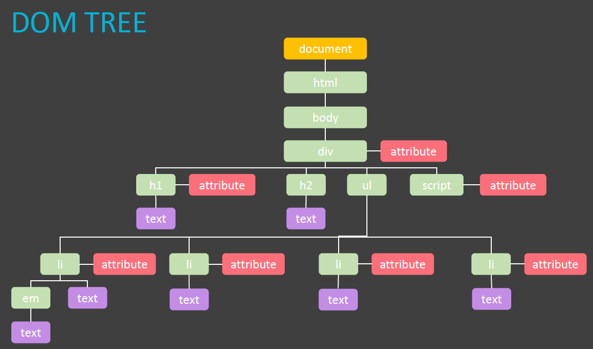
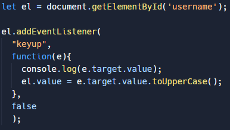
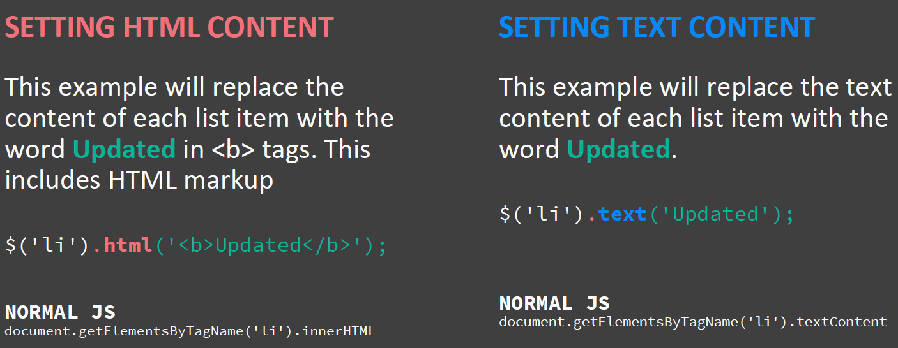
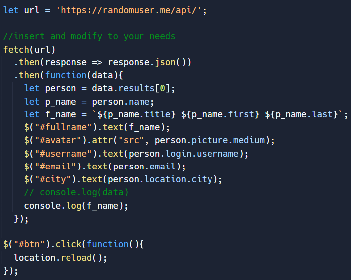
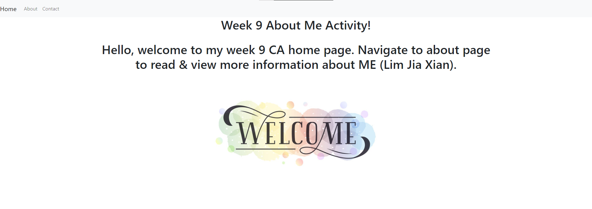
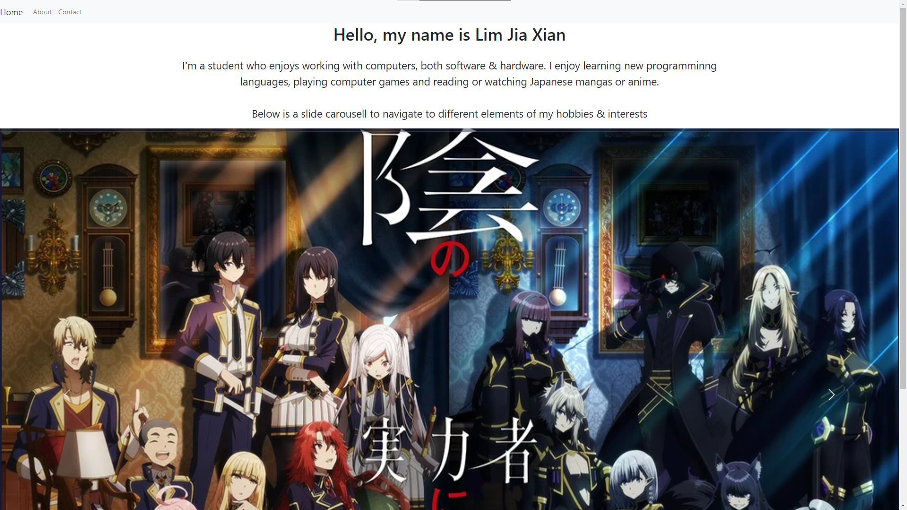
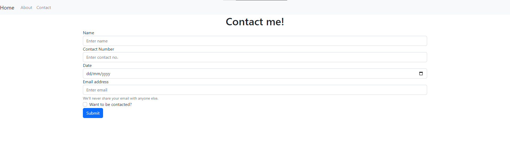
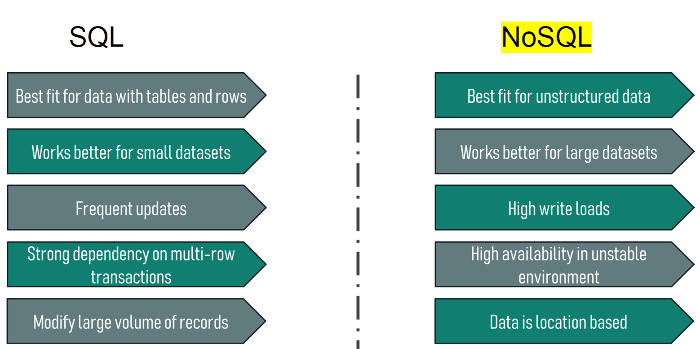
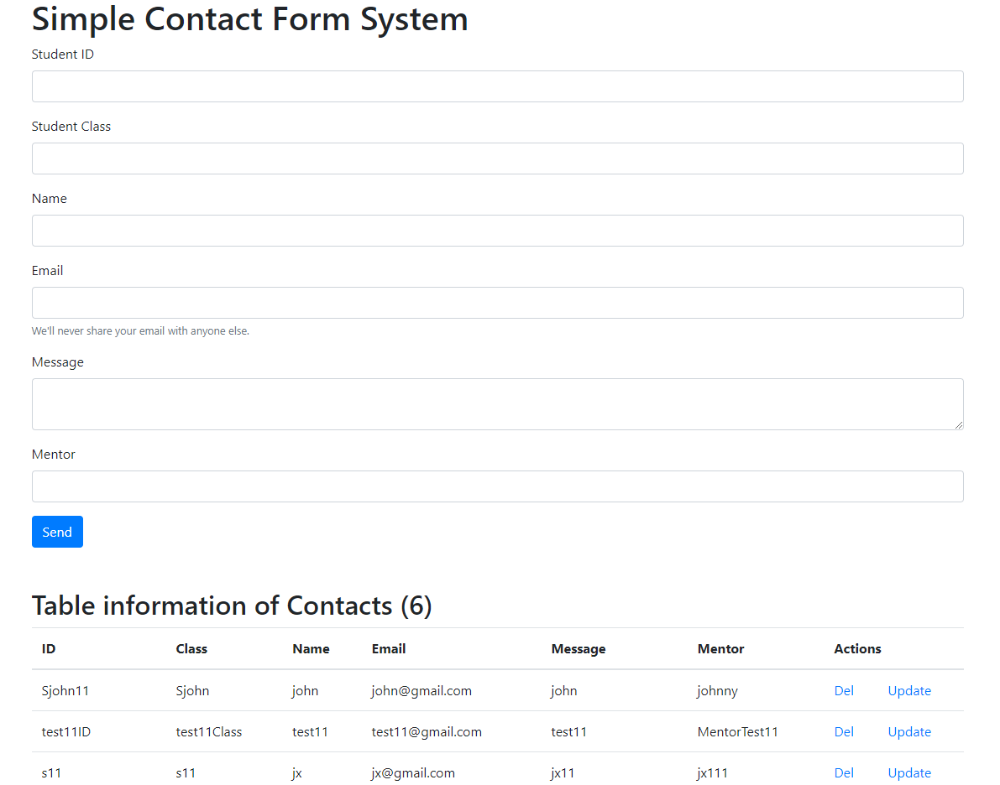
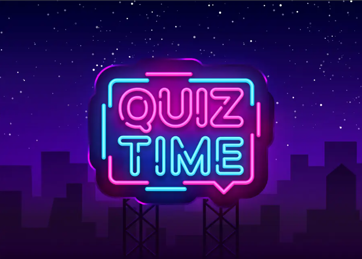

- Jiaxian's ID Development Blog-
- Week 1 -


Started learning about web development, how a website is brought together by HTML, CSS and JavaScript.
HTML, also known as Hypertext Markup Language is to be considered the backbone of a website. While CSS, Cascading Style Sheet works as an aesthetics designer.
Last but not least, JS which is JavaScript, works as the brain. With all of these combined, website creation is possible!
The picture above was my 1st creation of website introduced as a CA to be completed in the first week of lesson. Initially, i didn't know what concept of design that should implemented,
what food to show and the necessary steps to make the website visually more attractive. After much consideration, i decided to create a template first, the interface where my text would be, pictures and background color.
After some online self-help tips on arranging certain text and image to proper sizes. My first website was live!
- Week 2 -


Semantic html css was covered. There are header, nav, article and section. Individually, they all work differently and bring out various results.
Header are the headers for a website. Nav is navigational buttons / links to different elements in the same existing site. Articles are a small portion of space to
fill in all the important details and lastly, section is a small portion of space similar to article but made larger for content and topics.
For my week2-CA, i used the concept of headers, footers, nav and div to separate
a website to enable it for a better view with enough white space and arrangments, this way people who are viewing the website will be able to view the different areas easily instead of having all the items being cramped together making it harder to see.
- Week 3 -


Media queries and flexbox were introduced. When different devices visit websites, media queries are responsible for alternating and changing some
viewpoints across the different IT devices, which is setting up min-width and max-width views to keep the website look proportional. Other than that, flexbox are
also used to adapt the layout to suit contents such as mobile layout that is vertical and desktop layout which is horizontal. In week 3 CA, i devised different skills learnt from
media queries and flexbox to shape and alter a weebsite containing words and a logo. I was tasked to move the logo on top of a border which contains the text as well as to amend changes to
the sizes of all objects to fit the screen size.
- Week 4 -


Learned about responsive images, basically they will automatically resize the image / picture based on the device's screen. This way, it can process higher resolution images when needed which also provides
more efficiency on design control. It can also shifts the text and image to different places other than it's original view. For instance, week4 ca, i'm required to change the view and picture format places
differently depending on the screen size. On the desktop view, the image is on the left while the text is placed just right beside it on the right. However, as the screen size shifts, the image will be center positioned while
the text will be directly below.
- Week 5 -


Since week 5 is whitespace week, our lecturers has given us a task to complete online. This includes self-learning tutorial short-courses and creation of the pratices, challenges and tutorials from the video itself. All the materials
are based of linkedin learning, specifically on JavaScript. This teaches how to use the application, objects, string outputs, DOM (Document Object Model) and Variables as well as Data types. Well i have to admit, learning online & physically
is completely different this depends on people. But personally, learning online doesn't really feel the same interactions as if learning physically since we can always pose & ask questions in doubt. But online encourages us to seek solutions
from multiple channels, browsers and stackoverflow.
For this week's CA, it will be the pratices & challenges from the online learning platform. I've created a different new object called game character, in this object it has several properties
& values, such as the name, the wepon that is equipped, elemental skill, character hair colour and so on. Once completion, I created a constructor based on this object to retrieve it's values. Besides that, I've also learnt query selector that allows
users to navigate to different areas on the website via a console. It allows you to make unsave and personal & volatile changes that will be wiped upon refreshing or closing the pages.
- Week 6 -


During week 6, our lecturers recapped about what we learnt from JavaScript during whitespace week. This includes 3 primitive datatypes, number values like decimal, intergers and even floating points. Secondly, strings, which is a sequence of alphabetical values to
store lines of text. Lastly, booleans that represents Logical input / output Data with True or False. Apart from that, there are also 2 other non-primitive data types such as undefined and null. Undefined data variables has no value asigned to it and for null data
type equates to a non-existent entity. Template Literals were also mentioned as a method that is used similarly like a place holder, with the use of backtick symbols (`), the code will be represented with more fresher and clean look that is more readable and easy to
understand. The differences between literal objects and function-based objects were also recapped, literal objects does not contain any constructors and could not be inherited while function-based objects gas constructors and allows inheritance with the cause of being
out of scope and messy.
The CA activity covered this week is more on JavaScript, using the conditions and logical operators to print out various outputs. Looping objects & arrays with while and for loops, creating var and let variables. Creation of constance &
functions were also used. I was tasked to create a variable object called momobae and input attributes into it while using console log to display & view the changes made.
- Week 7 -


In week 7, the topics of DOM was taught. For instance, when a browser loads up a webpage or site, it creates a model of that webpage titled DOM Tree. DOM also knowned as Document Object Model, is a cross-platform interface that houses html documents and each node is an object that
represents a certain part of a document. It is somewhat similar to a file hierarchy, where different objects are stored in different nodes which allows accesibility to change the style, structure and the content of the document. To access the elements we could use getElementById, querySelector
or even getting the class / tag name. To modify the element, the process breaks down in several parts. First off, when the code selects an element to modify, the interpreter will make use of the DOM Tree to search for it's contents. Followed by identifying the class ID attribute and the value.
Once found, you can start making changes / edits to that individual note that has either parent or child.
For the activity this week, a JavaScript program was used to loop different elements in the class and updated it's attributes. For e.g. class "li.hot" was changed to "cool". However,
since i was only required to change the 3rd element that has the class attribute of hot to cool, the loop was used to search for the 3rd element by using getElementByClassName. Apart from that, I'm also tasked with creating a JavaScript file that allows lower case letters entered to a textbox automatically
changed into upper case. To achieved this, getElementById was used to obtain the element, followed by using addEventListener to get the target value before setting it to uppercase.
- Week 8 -


J-Query and API also known as Application Programming Interface was introduced & taught in week 8. By default, when a user selects different elements on a website, it automatically creates
a jQuery object that references it to their individual elements. The function of jQuery has only one parameter, which is normally used to simplify event handling, updating content, size or even visibility for certain elements.
For APIs, AJAX was also taught which help assist in APIs. AJAX also known as Asynchronous JavaScript and XML, sends and request data from a server followed by outputing a response back to the requestee. In essence,
AJAX let you ask for information from a web server that javascript processses and returns.
For this week's CA, there was a task to hide certain circles in a website using selecting and hiding in javascript. Other than that,
i've also created a javascript to fetch random users online while displaying random details as well as profile pictures in a web form by using jQuery.
- Week 9 -



After our common test in week 9, there is an ASYNC ID lesson about bootstrap. It is essentially just a template to make websites easier to create with the help of templates to beautify different elements. The 3 pictures above were the creation
about myself using bootstrap templates found online to create a webpage with detailed information about ME. I've implemented a navigational bar, carousell image slider, and a webform. Truth be told, after the completion of the website, i was quite
buffled as to how bootstrap makes webpage creation tenfold of times more easier than usual HTML, CSS and JavaScript.
- Week 12 -


After the 2 weeks break, jumping to week 12, my lecturer has introduced a new concept of dealing with data using NoSQL. It translates to Not only Structured Query Language. With the technology advancements, SQL is not fully capable of scaling properly with huge number of data.
Thus, the creation of NoSQL was born. It allows Tech-Giants with huge & massive number of data to be able to scale better, faster and more efficiently with dynamic schema. Additionally, it also provides storage and unstructured data collection.
For this week's CA, it is to play around and modify
a form that stores information online via RestDB, it is a free online storage that allows customization to suit different needs & varieties. The task was to create a student form consisting of textboxes for studentID, Class, Name, Email, Message and Mentor respectively with button functionality such as send, update and delete.
- Week 13 -

In week 13th, there isn't any additional concepts or information covered for interactive development lessons. However, our lecturer has given us valuable feedbacks on our past individual assignment 1. Such as the importance of keeping folders accordingly to hierarchy formats, evaluating concepts & informations and how our website works with
different functions listed on README file as well as the typing a very neat & well crafted introduction pitch about our website. Additionally, there is also a class quiz which covers the chapters from week 1 to 8: HTML, CSS, JavaScript and jQuery. Thankfully, i was well-prepared by browsing through and using w3schools website to sharpen & test all my knowledge
and skills i've learnt so far.